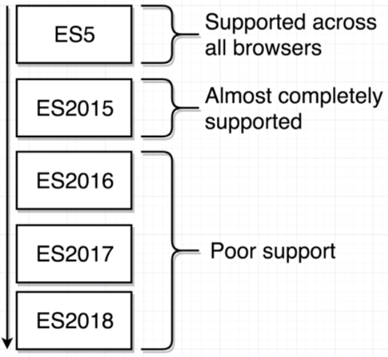
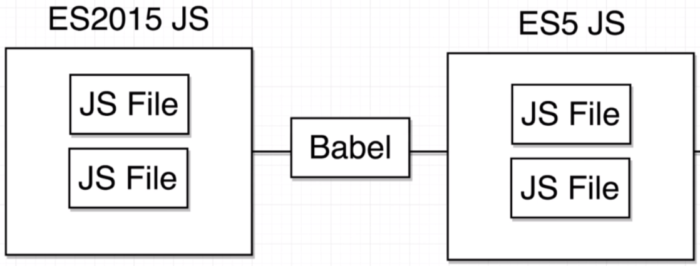
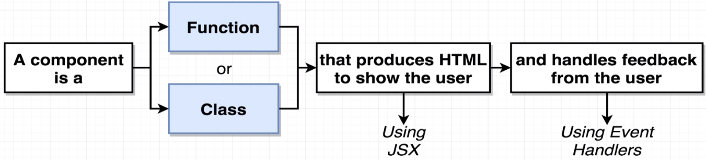
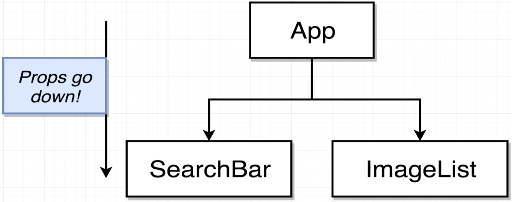
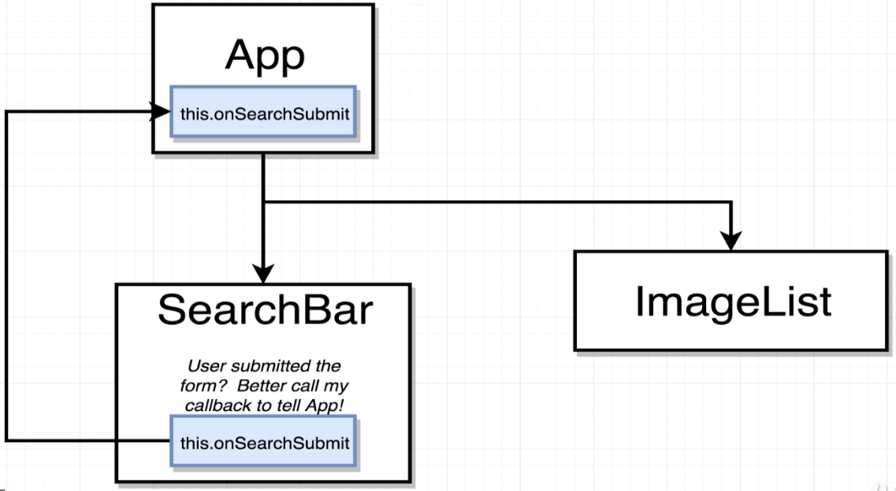
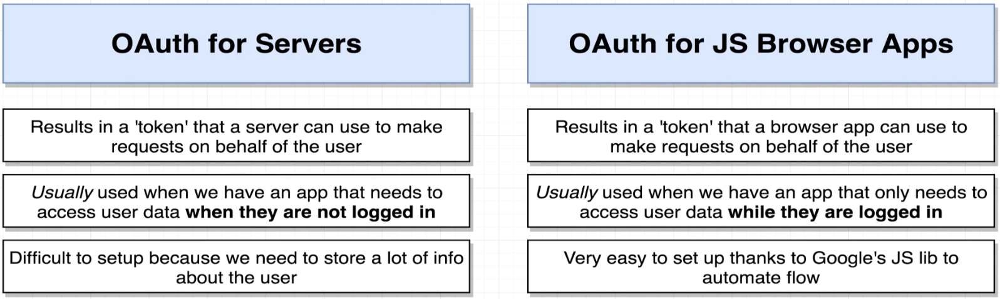
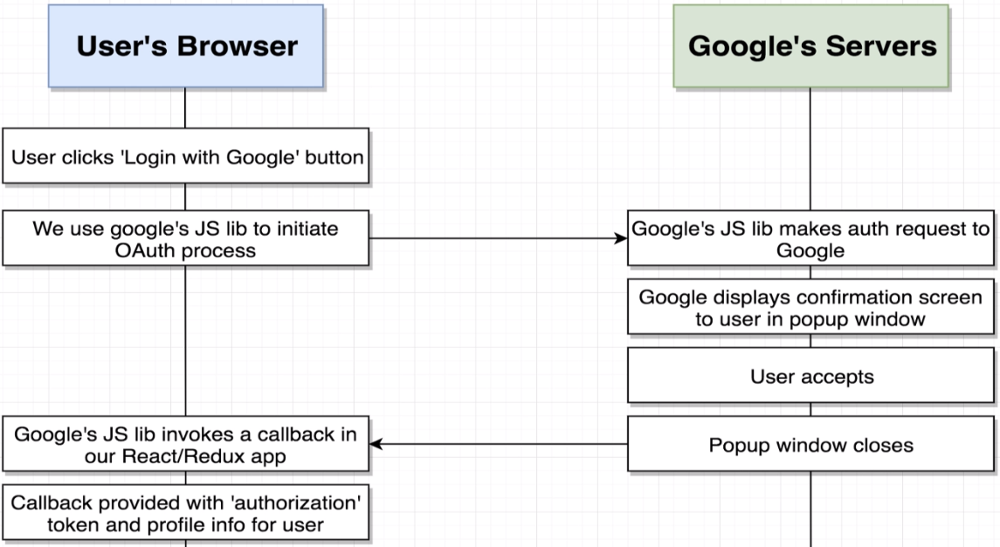

Modern React with Redux
Table of Contents
1 Let's Dive In
1.1 Why Create React App?


1.2 Displaying Content with Functional Components

2 Handling User Input
2.1 Communicating Child to Parent


3 Async Actions with Redux Thunk
3.1 Fetch Data in a Redux App

3.2 Behind the Scenes of Redux Thunk

4 Navigation with React Router
4.1 Different Router Types

5 Handling Authentication with React
5.1 OAuth-Based Authentication

5.2 OAuth for Servers vs Browser Apps
